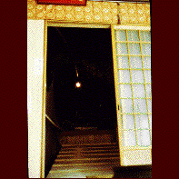
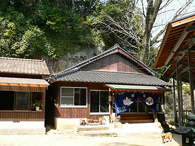
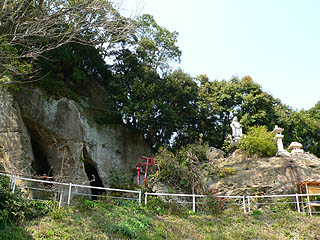

鶴の岩屋/佐賀県肥前町
はっきりいって僻地である。車のカーラジオからは韓国の放送しか聞こえてこない。日本の果て風情満点のこの地にひっそりとソレはある。ソレは一応町の文化財か史跡かなんかになっているらしく、取り敢えず看板が立っているのだがそれでも、不安になるくらいの僻地だ（肥前の方、僻地僻地とごめんね）。道分かりにくいし。
何とか「鶴の岩屋」の入り口に着く。今度は急な山道だ。打ち込んである鎖を掴みながら登りきるとそこには今までの苦労は何だったんだ、という位にそっけなく、村の集会所のような小さな建物がポツンと建っている。
もっともその建物の裏には巨大な岩があり、その岩に建物がピッタリ張り付いているので、本丸は岩の中にある、ということは容易に分かるのだが。
建物の中にはいる。中央にお供えものがありその奥に扉がある。その向こうは岩に直結しているようだ。早速、その扉を開き、明りのスイッチを入れると・・・
小便ちびりそうになった。いきなり無数の仏像の視線にさらされたのである。天然のドーム状の岩屋は4四方程度のものだがその壁面には天井近くまでびっしりと仏像が彫られている。それらは皆、採色されており赤い着物に真っ白な顔という不気味ないでたちで統一されている。
彫られているのは、入口両脇に仁王像、中央に地蔵菩薩、大日如来、そして四国八十八ヵ所西国三十三ヵ所のそれぞれの本尊。
中央には結界が張られており、密教の道場であることは分かるのだが、誰が、いつごろつくったのかはまるで分からないという。
いずれにしてもこの人里離れた場所で誰かが穴を穿ち像を彫ったのは事実である。
穴の中でその姿を想像するだけでも気が遠くなってくる。この岩屋をつくった人の執念がそのまま穴の中に密閉されているかのようだ。
1998.2.
再訪記
8年ぶりに鶴の岩屋へ行ってみた。
本来は行く予定ではなかったのだが、新しく「にあんちゃん」の碑が出来たというので見に行ったらそれが鶴の岩屋の入口だったのでついでに寄ってみた。
以前はかなりハードなアプローチだったが、鋪装道が完成し、車ですぐ近くまでいく事ができるようになっていた。
建物も岩屋の前に建つ覆堂の他にキャンプ場の飯盒炊爨をするような東屋が出来ていた。
地元の人達の憩いの場だったりするんだろうか…

以前訪問した時はひっそりとしていたが今回訪問時は丁度お祭りだったようで地元の方々が数名集まって食事の準備をされていた。
覆堂の内部も奇麗になっており、岩屋の説明版なども掲げられていて、ちょっとした観光地っぽくなっている。
この辺もにあんちゃんの碑効果なのだろうか。
お祭りということもあり、天井からは不思議な飾り物が吊るされていた。
稲の穂を傘のように丸く飾り付け、願い事や奉納者の名前を書いた短冊をあしらっている。
この稲穂シャンデリア、思い出すのは遠野の傘アゲモノ。勿論これは死者供養とは関係なく五穀豊穣系の祈願装置なのだろうが、天井から釣り下げる形式の飾り物としてはやっぱりこのようなシャンデリア型になるのだろうなあ。
で、内部。
中は以前と変わらず濃い〜空間だった。
洞窟内なので保存状態は良い方なのだろうが、柔らかい砂岩系の洞窟なのでやはり8年前と比べても若干の崩落が見られる。
赤い紅殻に彩られた不動明王、弘法大師、観音像がズラリと並ぶ様は無気味以外の何者でもない。
何で参拝者を見下ろす位置に彫るんでしょう…滅茶苦茶こわいじゃないっすか。
やっぱり不動サマのファイヤーパターンは当たり前のように赤く塗られてる。
この彫刻は今から約500年前に独りの修行僧が彫ったと伝えられている。
大勢の磨崖仏に見下ろされるのもこわいが独りでコレを彫ったというその執念も恐ろしい。
長い間放置されて傷みも激しいが近在の有志の方々が保存に乗り出したそうな。良かった良かった。
メインの岩屋付近にも幾つか岩の裂け目のような洞窟がある。

こんな中にも磨崖仏がいたりするんだろうか…
2006.4.
珍寺大道場 HOME